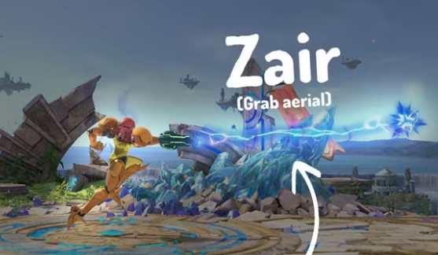
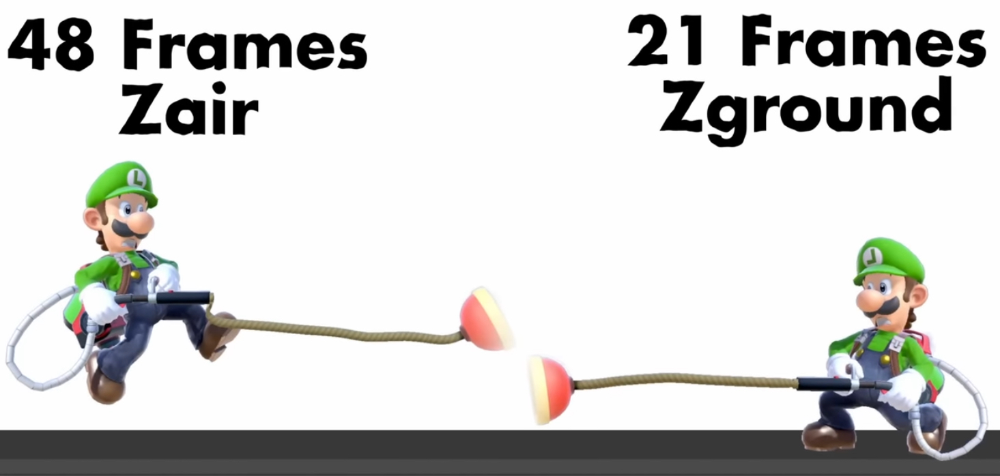

First off, you may not know what a "zground" is. You first need to know what a "zair" is.
A "zair" is when the player presses the grab button in the air (the Z button is the grab button, hence the name "zair")
Luigi is the *only character in the game that can do a zground.
Click here to see a quick video of zground (slowed down so you can see)
But what makes a zground so broken? The answer is quite simple.
As seen in the image above, luigi gets less endlag on his zground. This means that Luigi can use zground 50% faster then zair, and the fact the projectile falls makes it very good for edgeguarding.
*other characters CAN do z-grounds, its just that the hitbox disapears when the character hits the ground.